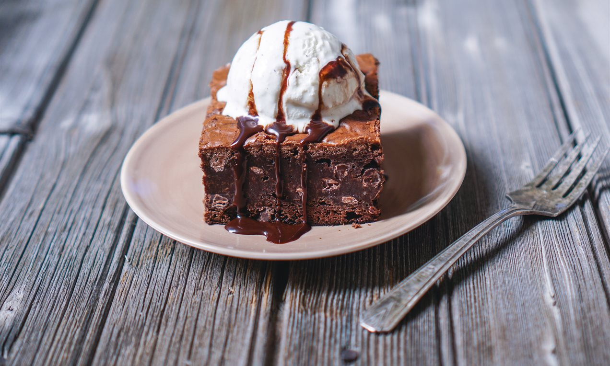

"Best ever chocolate brownies recipe"
Submitted by Sanam,

A super easy brownie recipe for a squidgy chocolate bake.
Prep = 25minutes
cooking time = 27-35mins
INGREDIENTS
METHOD
Cut 185g unsalted butter into small cubes and tip into a medium bowl. Break 185g dark chocolate into small pieces and drop into the bowl.
Fill a small saucepan about a quarter full with hot water, then sit the bowl on top so it rests on the rim of the pan, not touching the water. Put over a low heat until the butter and chocolate have melted, stirring occasionally.
Remove the bowl from the pan. Alternatively, cover the bowl loosely with cling film and put in the microwave for 2 minutes on High. Leave the melted mixture to cool to room temperature.
While you wait for the chocolate to cool, position a shelf in the middle of your oven and turn the oven on to 180C/160C fan/gas 4.
Using a shallow 20cm square tin, cut out a square of kitchen foil (or non-stick baking parchment) to line the base. Tip 85g plain flour and 40g cocoa powder into a sieve held over a medium bowl.
Chop 50g white chocolate and 50g milk chocolate into chunks on a board.
Break 3 large eggs into a large bowl and tip in 275g golden caster sugar, whisk the eggs and sugar until they look thick and creamy,
Pour the cooled chocolate mixture over the eggy mousse
Hold the sieve over the bowl of eggy chocolate mixture and resift the cocoa and flour mixture, shaking the sieve from side to side, to cover the top evenly.
Gently fold in this powder using the same figure of eight action as before. The mixture will look dry and dusty at first but if you keep going it will end up looking gungy and fudgy.
Finally, stir in the white and milk chocolate chunks until theyre dotted throughout.
Pour the mixture into the prepared tin
Put in the oven and set your timer for 25 mins. If the brownie wobbles in the middle, its not quite done, so slide it back in and bake for another 5 minutes,
Leave the whole thing in the tin until completely cold
Itll keep in an airtight container for a good two weeks and in the freezer for up to a month.
ENJOY!